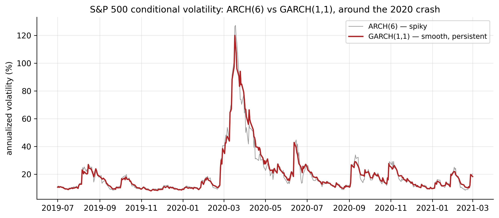
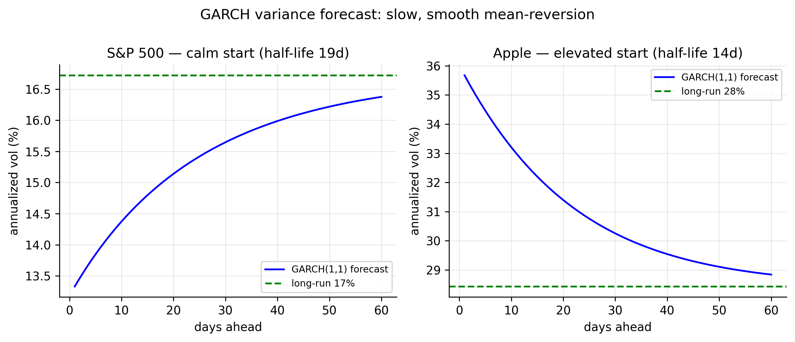

9 GARCH Models
The ARCH model of Chapter 8 captured volatility clustering, but Table 8.2 exposed its cost: to represent the persistence of volatility — the fact that a shock lingers for weeks — a pure ARCH needed four to ten lagged squared shocks, and gold-futures wanted more still. Bollerslev’s GARCH model fixes this with one idea: let today’s variance depend on yesterday’s variance as well as yesterday’s shock. That single extra term captures long, smooth persistence with a handful of parameters. GARCH is ARCH made practical, and it is the workhorse volatility model in all of finance.
We give it the same full treatment: definition, properties, fitting, order choice across all six series, variance forecasting, and the interpretation in terms of returns.
9.1 The GARCH model
A GARCH model makes today’s variance depend on both recent squared shocks and recent variances — capturing long, smooth volatility persistence with few parameters.
A GARCH(\(p,q\)) model keeps the ARCH terms in the squared shocks and adds autoregressive terms in the conditional variance itself:
\[ \sigma_t^2 = \alpha_0 + \sum_{i=1}^{q}\alpha_i\, a_{t-i}^2 + \sum_{j=1}^{p}\beta_j\, \sigma_{t-j}^2, \tag{9.1}\]
with \(\alpha_0>0\), \(\alpha_i,\beta_j \ge 0\). The mean model is unchanged (Equation 8.1): \(a_t = \sigma_t\varepsilon_t\) with \(\varepsilon_t \sim \text{iid}(0,1)\). By far the most used member — and the one our data will select — is the GARCH(1,1):
\[ \sigma_t^2 = \alpha_0 + \alpha_1 a_{t-1}^2 + \beta_1 \sigma_{t-1}^2 . \tag{9.2}\]
Read it as a recipe for tomorrow’s variance: a baseline \(\alpha_0\), plus a reaction to the latest shock (\(\alpha_1 a_{t-1}^2\)), plus a memory of where volatility already was (\(\beta_1 \sigma_{t-1}^2\)). The memory term is what ARCH lacked.
9.2 Properties of GARCH models
Persistence and stationarity. Substituting repeatedly shows a GARCH(1,1) is an ARCH(\(\infty\)) whose weights decay geometrically at rate \(\beta_1\) — which is exactly how it mimics many ARCH lags with two parameters. The variance is stationary when
\[ \alpha_1 + \beta_1 < 1, \tag{9.3}\]
and \(\alpha_1 + \beta_1\) is the persistence: how much of today’s variance carries into tomorrow. The unconditional variance is \(\alpha_0/(1-\alpha_1-\beta_1)\). For daily returns the persistence is typically very close to \(1\), which is why volatility drifts in long, slow swings rather than snapping back.
Half-life. The speed of mean-reversion is summarised by the half-life — the number of days for a volatility shock to decay halfway back to the long-run level:
\[ \text{half-life} = \frac{\ln 0.5}{\ln(\alpha_1 + \beta_1)}. \tag{9.4}\]
A persistence of \(0.99\) is a half-life of about \(69\) days; \(0.95\) is about \(14\).
Reaction vs memory. The split between \(\alpha_1\) and \(\beta_1\) matters: \(\alpha_1\) governs how sharply volatility jumps on news, \(\beta_1\) how long it then lingers. Typically \(\beta_1 \gg \alpha_1\) — volatility mostly remembers, and only nudges on each new shock. This is what makes GARCH volatility smooth where ARCH was spiky.
What it still misses. Standard GARCH is symmetric: \(\sigma_t^2\) depends on \(a_{t-1}^2\), so a big up day and a big down day of the same size raise tomorrow’s volatility equally. Real equities show a leverage effect — bad news raises volatility more than good news — which symmetric GARCH cannot capture. That, and the role of gold as the counter-example, is the subject of the asymmetric models that follow.
9.3 Fitting GARCH(1,1) to the S&P 500
Estimated by maximum likelihood on the S&P residuals, the fit is
\[ \sigma_t^2 = 4.0\times 10^{-6} + 0.165\,a_{t-1}^2 + 0.799\,\sigma_{t-1}^2, \tag{9.5}\]
so \(\hat\alpha_1 = 0.165\), \(\hat\beta_1 = 0.799\), and persistence \(\hat\alpha_1 + \hat\beta_1 = 0.96\) — a volatility half-life of about 19 trading days. The implied unconditional volatility, \(16.7\%\) annualised, matches the sample. Compared with the ARCH(1)’s single \(\hat\alpha_1 = 0.40\), GARCH puts most of the weight on memory (\(\hat\beta_1 = 0.80\)), which is why its fitted volatility is so much smoother.
Figure 9.1 makes the improvement visible. Around the 2020 crash the ARCH(6) volatility (grey) is jagged — it jerks up and down as individual squared shocks enter and leave its window — while the GARCH(1,1) volatility (red) rises and decays in one smooth, persistent arc. GARCH does with three parameters, and more realistically, what ARCH needed seven for.

library(rugarch)
est_return <- function(sym) {
d <- read.csv(sprintf("data/%s.csv", sym)); d$Date <- as.Date(d$Date)
diff(log(d$Adjusted[d$Date <= as.Date("2026-07-01")]))
}
spec <- ugarchspec(variance.model = list(model = "sGARCH", garchOrder = c(1, 1)),
mean.model = list(armaOrder = c(0, 0)), distribution.model = "norm")
fit <- ugarchfit(spec, est_return("SPX"))
fit # alpha1, beta1, persistence
Box.test(residuals(fit, standardize = TRUE)^2, lag = 10, type = "Ljung-Box")import pandas as pd, numpy as np
from arch import arch_model
def est_return(sym):
d = pd.read_csv(f"data/{sym}.csv", parse_dates=["Date"]).set_index("Date")
return np.log(d[d.index <= "2026-07-01"]["Adjusted"]).diff().dropna()
res = arch_model(est_return("SPX")*100, mean="Constant", vol="GARCH",
p=1, q=1, dist="normal").fit(disp="off")
print(res.summary())
print((res.std_resid**2).autocorr(1)) # ~0: clustering absorbedAs with ARCH, the check is in the standardised residuals: after fitting GARCH(1,1) the squared standardised residuals show no remaining autocorrelation, and the Ljung–Box and ARCH-LM tests no longer reject — the clustering is fully absorbed.
9.4 Choosing the order, and all six series
For GARCH the order question has an unusually clean answer: GARCH(1,1) is almost always enough. Higher orders \((p,q)\) rarely lower BIC on daily return data, and the profession treats GARCH(1,1) as the default. We confirm it by a small grid search and then fit GARCH(1,1) to every series.
# BIC over a small (p,q) grid — GARCH(1,1) is the usual winner
for (p in 1:2) for (q in 1:2) {
spec <- ugarchspec(variance.model = list(model = "sGARCH", garchOrder = c(q, p)),
mean.model = list(armaOrder = c(0, 0)))
cat(sprintf("GARCH(%d,%d) BIC=%.3f\n", p, q, infocriteria(ugarchfit(spec, est_return("SPX")))[2]))
}import itertools
for p, q in itertools.product([1, 2], [1, 2]):
res = arch_model(est_return("SPX")*100, vol="GARCH", p=q, q=p).fit(disp="off")
print(f"GARCH({p},{q}) BIC = {res.bic:.1f}")| Ticker | \(\hat\alpha_1\) | \(\hat\beta_1\) | persistence \(\alpha_1+\beta_1\) | half-life | uncond. vol |
|---|---|---|---|---|---|
| AAPL | 0.096 | 0.854 | 0.951 | 14 d | 1.79% |
| MSFT | 0.134 | 0.791 | 0.925 | 9 d | 1.69% |
| AMZN | 0.171 | 0.746 | 0.917 | 8 d | 2.27% |
| SPX | 0.165 | 0.799 | 0.964 | 19 d | 1.05% |
| GLD | 0.074 | 0.906 | 0.981 | 35 d | 1.09% |
| GCF | 0.054 | 0.932 | 0.986 | 48 d | 1.12% |
Table 9.1 is the whole case for GARCH, in six rows. Every series is captured by three parameters, versus the four-to-ten ARCH terms of Table 8.2, and every persistence is high — \(0.92\) to \(0.99\) — against ARCH’s mere \(0.49\) to \(0.79\). GARCH is not just more parsimonious; it captures much more of the true persistence, because the memory term does the work that many ARCH lags did only approximately. In every case \(\hat\beta_1 \gg \hat\alpha_1\): volatility mostly carries forward. And the differences across assets are economically sensible — the two gold series are the most persistent (half-lives of \(35\)–\(48\) days: gold’s volatility regimes last a long time), while the individual stocks mean-revert faster (\(8\)–\(14\) days). The S&P sits in between at \(19\) days.
9.5 Forecasting the variance
The GARCH(1,1) variance forecast has a simple closed form. One step ahead is known from the data, and beyond that the shock and variance terms merge into the persistence:
\[ \sigma_T^2(\ell) = \alpha_0 + (\alpha_1 + \beta_1)\,\sigma_T^2(\ell-1), \qquad \ell \ge 2, \tag{9.6}\]
a smooth geometric reversion to the unconditional variance \(\alpha_0/(1-\alpha_1-\beta_1)\) at the rate set by the persistence. Because that rate is close to \(1\), the reversion is slow — the half-lives of Table 9.1 — so today’s volatility state matters for weeks, not days. Figure 9.2 shows the two cases from our July 1 origin: the S&P began calm and its forecast drifts up toward its long-run level over many weeks; Apple began elevated and drifts down. Both are smoother and far more gradual than the ARCH forecasts of the previous chapter.

fit <- ugarchfit(spec, est_return("SPX"))
fc <- ugarchforecast(fit, n.ahead = 20)
sigma(fc) # forecast conditional volatility, 20 daysres = arch_model(est_return("SPX")*100, vol="GARCH", p=1, q=1).fit(disp="off")
fc = res.forecast(horizon=20, reindex=False)
print(np.sqrt(fc.variance.values[-1]))9.5.1 What the variance forecast means for returns
The interpretation is exactly as in Section 8.6.1, but now built on a smoother, more persistent, more realistic volatility. The conditional mean stays at \(\mu\); the prediction interval breathes with the forecast volatility,
\[ r_{T+h} \in \mu \pm 1.96\,\sigma_T(h) \quad (95\%), \tag{9.7}\]
and because GARCH volatility mean-reverts slowly, the interval stays narrow (or wide) for far longer than the ARCH interval did — a calm market is forecast to stay calm for weeks. This is the model behind the volatility forecasts and Value-at-Risk numbers used across the industry. The carousel shows the adaptive GARCH band against the constant-variance band for all six series.
The story matches the ARCH chapter — calm starts (S&P, Amazon) give bands tighter than the constant-variance band, elevated starts (Apple, Microsoft, gold) give wider ones — but the GARCH bands revert to the constant width much more slowly, holding their conditional shape for weeks. That slow, persistent adaptivity is why GARCH, not ARCH, is the volatility model used in practice for risk and option pricing.
9.6 Concept check
Decide first, then expand each answer.
Q1. What does GARCH add to the ARCH model, and why does it matter?
- (a) A term for the conditional mean.
- (b) A lagged conditional variance term (\(\beta\sigma_{t-1}^2\)), which captures long, smooth persistence with far fewer parameters than a high-order ARCH.
- (c) A deterministic trend.
- (d) Nothing new.
(b). The memory term makes GARCH(1,1) an ARCH(\(\infty\)) with geometrically decaying weights, so it captures with three parameters what ARCH needed many lags to approximate.
Q2. A GARCH(1,1) has \(\hat\alpha_1 = 0.16\), \(\hat\beta_1 = 0.80\). Its volatility persistence is:
- (a) 0.16.
- (b) 0.80.
- (c) 0.96 — and it is variance-stationary because that is below 1.
- (d) 0.128.
(c). Persistence is \(\alpha_1+\beta_1 = 0.96 < 1\) (stationary). It implies a half-life of \(\ln 0.5/\ln 0.96 \approx 17\) days.
Q3. In most fitted GARCH(1,1) models \(\hat\beta_1 \gg \hat\alpha_1\). This means volatility:
- (a) reacts violently to each new shock and forgets instantly.
- (b) mostly carries forward (long memory), nudged only a little by each new shock — hence its smooth path.
- (c) is constant.
- (d) is negative.
(b). \(\beta_1\) is the memory weight, \(\alpha_1\) the reaction. A large \(\beta_1\) means today’s variance is mostly yesterday’s, giving the smooth, persistent series.
Q4. Standard GARCH(1,1) cannot capture the leverage effect (bad news raising volatility more than good news) because:
- (a) it has too few parameters.
- (b) it depends on \(a_{t-1}^2\), which is symmetric in the sign of the shock — up and down moves of equal size have identical effect.
- (c) it is non-stationary.
- (d) it ignores past shocks.
(b). Squaring the shock discards its sign, so symmetric GARCH treats gains and losses alike. Asymmetric models (EGARCH, GJR-GARCH) fix this — and gold, which shows little leverage effect, is the instructive counter-example.
Q5. Why does a calm GARCH forecast stay calm much longer than a calm ARCH forecast?
- (a) GARCH has no mean-reversion.
- (b) GARCH persistence (\(\alpha_1+\beta_1 \approx 0.96\)) is far higher than ARCH’s, giving a long half-life, so the current state decays only slowly.
- (c) GARCH ignores the current state.
- (d) They revert at the same speed.
(b). High persistence means slow reversion (long half-life), so the conditional volatility — and therefore the return interval — holds its shape for weeks.
- GARCH(\(p,q\)) (Equation 9.1) adds lagged conditional variance to ARCH; the memory term makes GARCH(1,1) an ARCH(\(\infty\)), capturing persistence with three parameters.
- Persistence is \(\alpha_1+\beta_1<1\) (Equation 9.3); on our data it is \(0.92\)–\(0.99\) (vs ARCH’s \(0.49\)–\(0.79\)), with \(\hat\beta_1\gg\hat\alpha_1\) giving smooth volatility (Figure 9.1) and half-lives of \(8\)–\(48\) days (Table 9.1).
- GARCH(1,1) is the default — higher orders rarely help — and it fits all six series with three parameters each.
- The variance forecast mean-reverts slowly (Equation 9.6), giving an adaptive return interval (Equation 9.7) that holds its conditional shape for weeks — the industry-standard basis for volatility forecasting and Value-at-Risk.
- Standard GARCH is symmetric and misses the leverage effect; asymmetric models (EGARCH, GJR), with gold as the counter-example, come next.